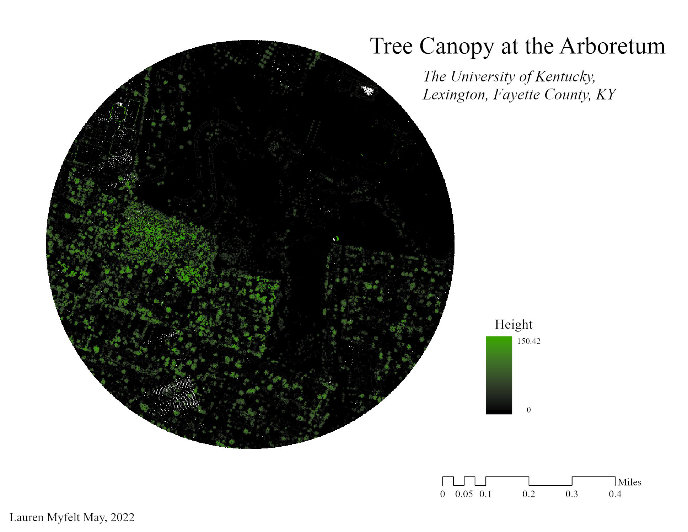
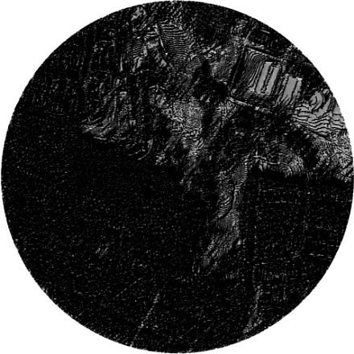

Contour map of the Arboretum. Enlarge map
Interactive mini tour of the Arboretum.
The Arboretum at the University of Kentucky is a unique place where students, families, and community members can experience a wide variety of trees, shrubs, and wildflowers. Created in 1991, the Arboretum provides easy access to local gardens, exercise, and educational opportunities.
The goal of this project is to provide a visual overview of the Arboretum, as well as measure key areas and locations. Tree cover and sunlight will also be assessed.
Tree Canopy for the Arboretum.
You can see that the largest trees are located in the Arboretum Woods, while shorter, younger trees are interspersed throughout.
